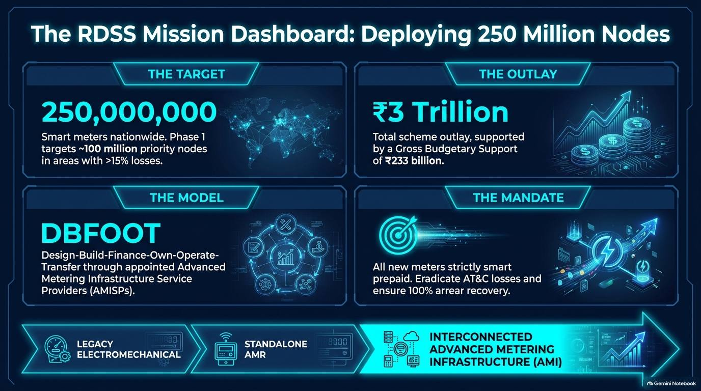

Smart Metering under RDSS: from meter to money
A complete point-by-point handbook for DISCOM engineers. It follows one reading from the consumer's meter, across the communication network, through the Head-End System and MDMS, into the prepaid ledger and back to the field when something goes wrong.
The big picture
Why the country is changing every consumer meter, and the four layers you will work across.
RDSS in five points
- Revamped Distribution Sector Scheme of the Ministry of Power: total outlay ₹3,03,758 crore with Gross Budgetary Support of ₹97,631 crore.
- Goal: bring AT&C losses down to 12–15% and close the gap between cost of supply and revenue realised (ACS–ARR).
- About 22.23 crore prepaid smart meters sanctioned for consumers, DTs and feeders (check current MoP figures before quoting).
- Delivered through AMISPs (AMI Service Providers) on the DBFOOT model: Design, Build, Finance, Own, Operate, Transfer. The utility pays on performance.
- Prepaid logic lives centrally in the MDMS and billing system, not on a smart card in the meter.
Four layers of AMI
| Layer | What it contains | Who you call |
|---|---|---|
| 1 · Physical edge | IS 16444 meter, CT/PT wiring, terminal block, seals | Field crew, AMISP installer |
| 2 · Transport | Cellular 4G / NB-IoT, RF mesh + DCU, PLC | AMISP network team, telecom |
| 3 · Data engine | HES (DLMS/COSEM, IS 15959), MDMS with VEE | AMISP IT, utility IT |
| 4 · Operations | Prepaid billing, DT energy accounting, GIS, OMS, SCADA | Revenue, energy audit, O&M |
The meter itself
Landscape, anatomy, metrology, the DLMS/OBIS language, and how a meter is installed and commissioned.
Legacy meter vs smart prepaid meter
| Function | Legacy | Smart prepaid (AMI) |
|---|---|---|
| Reading | Manual monthly visit | Remote 15/30-min interval reads over DLMS |
| Commercial mode | Postpaid, often estimated | Central MDMS prepaid ledger, daily |
| Tamper | Passive, noticed late | Battery-backed instant push alerts |
| Load control | Manual disconnection | Internal latching relay, remote connect/disconnect |
Meter classes in the field
| Type | Standard | Accuracy | Used for |
|---|---|---|---|
| 1-phase whole current | IS 16444 Part 1 | Class 1.0 | Domestic |
| 3-phase whole current | IS 16444 Part 1 | Class 1.0 | Large domestic, small commercial |
| CT-operated LT/HT | IS 16444 Part 2 | Class 0.5S / 0.2S | Industrial, DT and feeder meters (no internal relay) |
IS 16444 Part 1 also permits Class 2 for direct-connected meters. Follow your utility's technical specification.
Inside an IS 16444 smart meter
torque 2.5–3.0 Nm
shunt / Hall sensor
remote break
Li-SOCl₂ cell · EEPROM
optical port
The DLMS/COSEM language and OBIS codes
The meter talks to the HES in DLMS/COSEM (IS 15959). Every quantity has an OBIS address. These are the ones you will read most often.
| OBIS | Quantity | Field use |
|---|---|---|
| 1.0.1.8.0.255 | Cumulative active energy, import (kWh) | Main billing register, grid → consumer |
| 1.0.2.8.0.255 | Cumulative active energy, export (kWh) | Solar / net metering, consumer → grid |
| 1.0.9.8.0.255 | Cumulative apparent energy (kVAh) | kVAh billing for commercial and industrial |
| 1.0.1.6.0.255 | Maximum demand, active (kW) | Demand charges |
| 1.0.9.6.0.255 | Maximum demand, apparent (kVA) | kVA demand billing |
| 1.0.32 / 52 / 72.7.0.255 | Phase voltages R / Y / B | Missing phase, floating neutral |
| 1.0.31 / 51 / 71.7.0.255 | Phase currents R / Y / B | Missing current, bypass |
The four data profiles in memory
- Instantaneous: live V, I, kW. Read on demand by the HES.
- Load profile: 15/30-minute blocks. Stored locally typical 35–60 days during network outages.
- Billing profile: midnight snapshot of cumulative registers (kWh, kVAh, MD). The MDMS bills from this.
- Event / tamper profile: permanent, time-stamped log of anomalies such as cover open or neutral disturbance.
Installation and commissioning checklist
- De-energise and isolate. Prove zero potential on all phases and neutral.
- Mount vertically (within ±5°). Phase association: R-in to R-out.
- Torque terminals to 2.5–3.0 Nm. Loose screws cause hot spots and fires.
- For CT meters, check P1 faces the source and S1/S2 go to the meter's I-in / I-out. Earth S2 at one point only.
- Power on. Network LED goes from blinking to steady. RSSI better than −95 dBm.
- Scan MAC / ICCID / meter serial number in the AMISP app. Run the ping test.
- Confirm the first index in HES matches the LCD and the asset shows Active in MDMS. Apply serialised seals and photograph.
Communication, HES & MDMS
How the reading leaves the meter, how the Head-End System manages it, and how the MDMS decides whether it can be billed.
Choosing the communication technology
| RF mesh (Wi-SUN) | Cellular 4G | NB-IoT | PLC | |
|---|---|---|---|---|
| Medium | Sub-GHz ISM 865–867 MHz, meter-to-meter hops to a DCU | Licensed bands, direct to tower | LPWA, private APN | LV power line, 35–490 kHz band |
| Best for | Dense colonies, rural clusters | Urban, CT and DT meters | Deep indoor, basements | Areas with poor cellular cover |
| Strength | No telecom bill, self-healing | High throughput, <100 ms | Penetration, low power | Uses existing conductors |
| Typical failure | Node isolation, DCU outage | SIM / APN detachment | Module unseated | SMPS noise, phase jumpers |
What the HES does
- Onboarding: registers each meter by serial number, MAC and SIM ICCID.
- Passive reads: instantaneous values on demand; scheduled load, billing and event profiles.
- Active commands: relay disconnect/reconnect SLA typical <10 min, time sync, parameter changes, firmware over the air (signed, encrypted).
- Health: last communication time, RSSI, command success rate.
What the MDMS does
- Collects raw DLMS payloads, removes duplicates, flags missing blocks and bad CRC.
- Converts data to a standard model (CIM) and masks consumer identity for DPDP Act compliance.
- Runs VEE: Validation, Estimation, Editing. Only passed data reaches billing.
- Holds the master repository for load profiles, billing data and analytics.
Watch readings pass or fail validation
| VEE check | If it fails |
|---|---|
| Negative incremental consumption | Reject, investigate meter / mapping |
| RTC drift beyond limit | Force NTP sync via HES, re-process |
| Energy advance with zero current | Flag for metrology / tamper check |
| Missing interval blocks | Estimate and tag VEE_ESTIMATED, or request backfill |
Five offline and data cases, as decision trees
Field cheat sheet
| Symptom | Suspect layer | First action |
|---|---|---|
| Meter offline | Physical / telecom | Check RSSI, reseat NIC, check APN |
| Relay disconnect fails | HES / hardware | Check HES timeout; test continuity across relay terminals (welded contacts) |
| MDMS VEE rejection | MDMS / IT | Check NTP sync, re-poll missed blocks |
| Terminal overheating | Wiring / hardware | IR / thermal scan (>75 °C is abnormal), re-torque, check conductor size |
| High consumption complaint | Consumer / metrology | Accuracy test with reference standard; check earth leakage |
Prepaid engine & consumer complaints
How the daily ledger works, the words consumers will use with you, and six complaint cases with their real causes.
Postpaid vs prepaid
- Postpaid: consume → monthly reading → bill weeks later → arrears → manual disconnection.
- Prepaid: recharge first → 15-min tracking → midnight ledger deduction → low-balance alert → remote disconnect at zero → automatic reconnect on recharge.
The nine-step prepaid cycle
- Consumer recharges through app / UPI.
- Billing system updates the ledger.
- Meter records 15-min kWh blocks.
- Cost = kWh × ToD rate + daily share of fixed charges.
- Deduction posted at midnight.
- Balance crosses the alert level (e.g. ₹100).
- SMS and app alert sent.
- At ₹0 the MDMS asks the HES to open the relay, except in notified non-disconnection hours (nights, holidays).
- On recharge the HES closes the relay; the consumer may need to press the meter button to confirm.
Billing words to explain to consumers
- kWh active energy (OBIS 1.8.0); kVAh apparent energy, billed to commercial/industrial to encourage good power factor.
- Maximum demand: highest average load in any 15/30-min block of the billing cycle.
- ToD tariff: different rates by time of day, as notified in the APERC tariff order.
- Fixed charges are spread daily; adjustments include arrears instalments and subsidy credits.
Run a prepaid account day by day
| Day | Energy ₹ | Fixed ₹ | Arrears ₹ | Balance ₹ | Status |
|---|
Example figures only. Add an arrears instalment to see Case 2 below: the balance drains faster with the same consumption.
Six complaint cases
| Complaint | Usual real cause | What to check | What to do |
|---|---|---|---|
| 1 · Bill higher than old meter | Old meter ran slow; the Class 1.0 meter records small loads; peak-hour use; earth leakage | LCD vs HES 1.8.0; VEE did not estimate wrongly; ToD split | Explain ToD in the app; electrician for wiring leakage |
| 2 · Balance falling too fast | Daily fixed charges or arrears instalment started on switch to prepaid | Midnight deduction: energy vs non-energy parts | Walk the consumer through the ledger |
| 3 · Recharged, still disconnected | Payment-gateway to billing failure, or meter offline and cannot receive reconnect | Gateway webhook; HES command queue; network LED | Sync ledger manually; send technician |
| 4 · App shows less than LCD | MDMS VEE rejected reads (clock drift) so data is held back | VEE exception queue; last read time | Force NTP sync, re-process VEE |
| 5 · Solar consumer: big import, zero export | CT secondary S1/S2 reversed at installation | Quadrant / PF sign on HES; 1.8.0 vs 2.8.0 | Correct wiring, recalculate ledger, credit consumer |
| 6 · "Meter running fast" | Rarely the meter; earth leakage or old meter was slow | Parallel check with a Class 0.2S reference standard | Show the accuracy result; test is still mandatory on a genuine complaint |
Energy accounting, tamper & solar
Using interval data to find losses, reading tamper events correctly, and getting net metering right.
The energy waterfall
Feeder meter (Class 0.2S, 11 kV) → DT meter (Class 0.5S) → consumer meters (Class 1.0). Accounting only works when all three tiers report time-synchronised interval data.
What a DT loss figure proves
- Proves: energy is leaving the network unbilled.
- Does not prove: theft. Causes can be technical (heating, undersized conductors), commercial (consumers mapped to the wrong DT), hardware (DT meter CT wiring) or theft.
Case: the ghost feeder
An 11 kV feeder's loss jumped from 11.2% to 28.4%. Twelve DTs showed 45–60% loss. GIS cross-check found 340 consumers tagged to the wrong DT during app commissioning. After correcting the hierarchy in MDMS the feeder loss came to 9.8%, with no truck roll.
Compute DT loss
Tamper: an event is not proof of theft
| Event in MDMS | Possible technical cause | Possible tamper | Meter's response |
|---|---|---|---|
| Voltage missing | Blown fuse, grid outage | Phase bypassed at service drop | Logs event with time stamp |
| Current missing (V normal, I = 0) | No load, empty premises | CT terminal bypassed | Logs event |
| Neutral disturbance / earth load | Loose neutral | Load returned through an earth rod | Switches to single-wire mode, bills the higher current |
| Magnetic influence | Strong field nearby | Magnet on meter typical >0.2 T | Hall sensor logs; may bill at Imax (make-dependent) |
| Top cover open | Authorised maintenance | Opening the meter | Battery-powered push alert to HES, permanent record |
Solar and net metering: watch the CT polarity
Move the sun, then reverse S1/S2
- Import (grid → home, +P) is quadrants 1 and 4 and adds to 1.8.0. Export (home → grid, −P) is quadrants 2 and 3 and adds to 2.8.0.
- With S1/S2 reversed the meter sees the opposite direction: export is recorded as import and import as export. A negative power factor at midday is the giveaway.
- Before calling it a fault, check the operating condition, the meter data, CT/PT connections and phase association together.
Grid integration: the autonomous outage
- T+0: a storm drops an LT line.
- T+1 min: 45 meters push "Power Failure" to HES on their backup power.
- T+3 min: MDMS correlates the simultaneous events.
- T+5 min: GIS confirms all 45 share one DT.
- T+10 min: OMS dispatches the crew before the first consumer calls.
Operations, cyber security & SLA
Keeping the system secure, a disciplined triage habit, the replacement SOP, holding the AMISP to its contract, and the capstone exercise.
Cyber security in four layers
| Layer | Controls |
|---|---|
| Meter (edge) | Device authentication, secure boot, isolated ports, signed firmware only |
| Transport | TLS 1.3 on cellular, DTLS on RF mesh, AES-GCM-128, DLMS security suites |
| HES / MDMS | PKI for API handshakes, role-based access, immutable audit trails |
| Data privacy | DPDP Act compliance; consumer identity masked inside MDMS |
Triage: never jump to conclusions, trace the data
- Field / wiring: tampering, neutral bypass, consumer side fault?
- Meter hardware: blank display, welded relay?
- Communication: SIM, RF node, APN?
- HES: command timeout, decryption failure, HES down?
- MDMS / billing: VEE rejection, interface failure?
Meter replacement SOP
- Diagnose: confirm stoppage, erratic data or display failure.
- Isolate: open upstream cut-outs, prove dead on phases and neutral.
- Replace: fit the new meter, torque to 2.5–3.0 Nm.
- Commission: network latch, sync device ID in the AMISP app.
- Document: photograph old final index, seal, match physical and digital readings.
AMISP SLA matrix typical, verify in contract
| Parameter | Target | Penalty |
|---|---|---|
| Midnight data collection | ≥ 98% meters within 24 h | Proportionate OPEX deduction |
| On-demand read | < 30 s for 95% of requests | Per failed transaction |
| Remote connect / disconnect | Within 10 min | Per failed event |
| HES / MDMS uptime | > 99.5% | SLA escrow deduction |
| Non-communicating recovery | 48 h urban / 72 h rural | Daily liquidated damages |
Capstone: Vidyut Nagar DISCOM
Assets: 10 feeders, 100 DTs, 10,000 consumers, mixed RF and cellular.
Problems in the data pack: VEE rejections in HES/MDMS logs; un-indexed consumers and billing mismatches; a backlog of non-communicating meters in dense blocks; top-cover and magnet alerts; solar consumers with reverse-current errors on 1.8.0/2.8.0.
Your team presents:
- End-to-end AMI architecture
- Communication strategy (RF vs cellular)
- Installation and commissioning plan
- Troubleshooting plan for offline meters
- Energy accounting and AT&C reduction
- Consumer complaint and tamper handling
- O&M governance and rapid-response teams
- SLA dashboard and KPIs
- 90-day corrective roadmap
Twenty field rules
- An event log is an anomaly to investigate, not a penalty.
- Zero consumption with good communication: suspect neutral / earth or phase bypass.
- Solar export errors: check S1/S2 first.
- Triage in order: Field → Meter → Comms → HES → MDMS → Billing.
- Never replace a meter without isolating upstream.
- Torque matters: 2.5–3.0 Nm.
- Cover-open records are permanent, even without mains.
- Photograph the final index before removal.
- Match the class: 1.0 domestic, 0.5S CT commercial, 0.2S feeders.
- Standardise phase allocation at the terminal block.
- Sudden feeder loss spikes usually mean GIS mapping errors.
- RSSI worse than −105 dBm: fit a high-gain external antenna.
- Meters keep weeks of profile data through outages; request backfill.
- Prepaid disconnection is decided by MDMS logic, not the meter.
- Clock drift ruins data: keep NTP sync healthy.
- Failed remote disconnect: suspect a welded relay or low auxiliary voltage.
- Enforce the 98% data availability clause.
- Escalate urban non-communicators after 48 hours.
- Hands off the internals: use optical probe and buttons only.
- The meter is a sensor; validated MDMS data is the product.
The 10-step field troubleshooting tree
Use this on every site visit. Answer each question honestly; the tool tells you the corrective action when a step fails.
Slide decks, videos and infographics
Every deck from the course, slide by slide, plus the two explainer videos and six one-page posters.
Slide decks

Videos
Infographics
Quick reference
Numbers and terms to keep in the field diary.
Field numbers typical
| Item | Value |
|---|---|
| Terminal torque | 2.5–3.0 Nm |
| Healthy RSSI at commissioning | better than −95 dBm |
| Fit external antenna | worse than −105 dBm |
| VEE clock-drift rejection | > 30 min |
| Linear estimation window | < 3 h gap |
| Local profile storage | 35–60 days |
| Magnetic tamper threshold | > 0.2 T |
| Terminal overheating | > 75 °C |
| LT DT loss needing inspection | > 15% sustained |
| Low-balance alert | ₹100 (example) |
| RTC accuracy | ≤ 0.5 s/day |
Glossary
- AMI
- Advanced Metering Infrastructure: meter, network, HES, MDMS together.
- AMISP
- AMI Service Provider who installs, operates and is paid per SLA.
- DBFOOT
- Design-Build-Finance-Own-Operate-Transfer contract model.
- HES
- Head-End System: talks to meters, sends commands.
- MDMS
- Meter Data Management System: stores, validates, prepares billing data.
- VEE
- Validation, Estimation, Editing of meter data.
- DLMS/COSEM
- Meter data protocol (IS 15959 in India).
- OBIS
- Code that addresses each meter quantity, e.g. 1.0.1.8.0.255.
- DCU
- Data Concentrator Unit collecting RF mesh or PLC meters.
- NIC
- Network Interface Card: the meter's plug-in comms module.
- RSSI
- Received signal strength, in dBm (closer to 0 is stronger).
- ICCID
- SIM card serial number used at onboarding.
- NTP
- Network Time Protocol used to correct meter clocks.
- CIM
- Common Information Model for utility data exchange.
- ToD
- Time-of-Day tariff.
- DPDP Act
- Digital Personal Data Protection Act, 2023.
Self-check
Twelve questions. Pick an answer to see whether it is right and why.
Score: 0 / 12